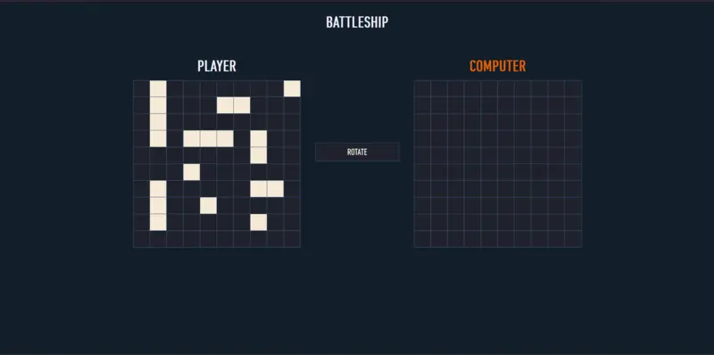

My Work

Todo List


This web application is designed to help users manage their projects and tasks efficiently.

Weather App
This repository contains a Weather App built using HTML, CSS, JavaScript, and Webpack.

Todo List
This project is a web-based implementation of the classic Battleship game, where you can play against a computer opponent.
Library App
A simple library web app.

Donut Delights
A web application for a delightful donut shop, showcasing a menu, contact information, and more.
Tic-Tac-Toe
A simple web-based Tic-Tac-Toe game